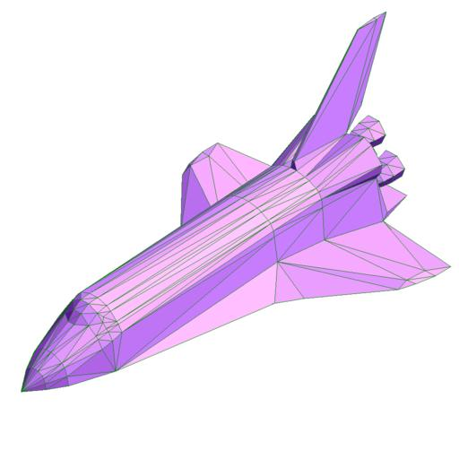

1. Introduction
These sections provide an overview of what SPARTA can do, describe what it means for SPARTA to be an open-source code, and acknowledge the funding and people who have contributed to SPARTA.
1.1 What is SPARTA
SPARTA is a Direct Simulation Montel Carlo code that models rarefied gases, using collision, chemistry, and boundary condition models. It uses a hierarchical Cartesian grid to track and group particles for 3d or 2d or axisymmetric models. Objects emedded in the gas are represented as triangulated surfaces and cut through grid cells.
For examples of SPARTA simulations, see the SPARTA WWW Site.
SPARTA runs efficiently on single-processor desktop or laptop machines, but is designed for parallel computers. It will run on any parallel machine that compiles C++ and supports the MPI message-passing library. This includes distributed- or shared-memory parallel machines as well as commodity clusters.
SPARTA can model systems with only a few particles up to millions or billions. See Section 8 for information on SPARTA performance and scalability, or the Benchmarks section of the SPARTA WWW Site.
SPARTA is a freely-available open-source code, distributed under the terms of the GNU Public License, or sometimes by request under the terms of the GNU Lesser General Public License (LGPL), which means you can use or modify the code however you wish. The only restrictions imposed by the GPL or LGPL are on how you distribute the code further. See Section 1.4 below for a brief discussion of the open-source philosophy.
SPARTA is designed to be easy to modify or extend with new capabilities, such as new collision or chemistry models, boundary conditions, or diagnostics. See Section 10 for more details.
SPARTA is written in C++ which is used at a hi-level to structure the code and its options in an object-oriented fashion. The kernel computations use simple data structures and C-like code for effciency. So SPARTA is really written in an object-oriented C style.
SPARTA was developed with internal funding at Sandia National Laboratories, a US Department of Energy lab. See Section 1.5 below for more information on SPARTA funding and individuals who have contributed to SPARTA.
1.2 SPARTA features
This section highlights SPARTA features, with links to specific commands which give more details. The next section illustrates the kinds of grid geometries and surface definitions which SPARTA supports.
If SPARTA doesn't have your favorite collision model, boundary condition, or diagnostic, see Section 10 of the manual, which describes how it can be added to SPARTA.
General features
runs on a single processor or in parallel
distributed-memory message-passing parallelism (MPI)
spatial-decomposition of simulation domain for parallelism
open-source distribution
highly portable C++
optional libraries used: MPI
easy to extend with new features and functionality
runs from an input script
syntax for defining and using variables and formulas
syntax for looping over runs and breaking out of loops
run one or multiple simulations simultaneously (in parallel) from one script
build as library, invoke SPARTA thru library interface or provided Python wrapper
couple with other codes: SPARTA calls other code, other code calls SPARTA, umbrella code calls both
Models
3d or 2d or 2d-axisymmetric domains
variety of global boundary conditions
create particles within flow volume
emit particles from simulation box faces due to flow properties
emit particles from simulation box faces due to profile defined in file
emit particles from surface elements due to normal and flow properties
ambipolar approximation for ionized plasmas
Geometry
Cartesian, heirarchical grids with multiple levels of local refinement
embed triangulated (3d) or line-segmented (2d) surfaces in grid, read in from file
Gas-phase collisions and chemistry
collisions between all particles or pairs of species groups within grid cells
collision models: VSS (variable soft sphere), VHS (variable hard sphere), HS (hard sphere)
chemistry models: TCE, QK
Surface collisions and chemistry
for surface elements or global simulation box boundaries
collisions: specular or diffuse
Performance
grid cell weighting of particles
adaptation of the grid cells between runs
on-the-fly adaptation of the grid cells
static load-balancing of grid cells or particles
dynamic load-balancing of grid cells or particles
Diagnostics
Output
dump files (text or binary) of per particle, per grid cell, per surface element values
binary restart files
on-the-fly rendered images and movies of particles, grid cells, surface elements
Pre- and post-processing
Various pre- and post-processing serial tools are packaged with SPARTA; see Section 9 of the manual.
Our group has also written and released a separate toolkit called Pizza.py which provides tools for doing setup, analysis, plotting, and visualization for SPARTA simulations. Pizza.py is written in Python and is available for download from the Pizza.py WWW site.
1.3 Grids and surfaces in SPARTA
SPARTA overlays a grid over the simulation domain which is used to track particles and to co-locate particles in the same grid cell for performing collision and chemistry operations. SPARTA uses a Cartesian hierarchical grid. Cartesian means that the faces of a grid cell are aligned with the Cartesian xyz axes. Hierarchical means that individual grid cells can be sub-divided into smaller cells, recursively. This allows for flexible grid cell refinement in any region of the simulation domain. E.g. around a surface, or in a high-density region of the gas flow.
An example 2d hierarchical grid is shown in the diagram, for a circular surface object (in red) with the grid refined on the upwind side of the object (flow from left to right).

Objects represented with a surface triangulation (line segments in 2d) can also be read in to define objects which particles flow around. Individual surface elements are assigned to grid cells they intersect with, so that particle/surface collisions can be efficiently computed.
As an example, here is coarsely triangulated representation of the space shuttle (only 616 triangles!), which could be embedded in a simulation box. Click on the image for a larger picture.


See Sections 6.9 and 4.10 for more details of both the grids and surface objects that SPARTA supports and how to define them.
1.4 Open source distribution
SPARTA comes with no warranty of any kind. As each source file states in its header, it is a copyrighted code that is distributed free-of- charge, under the terms of the GNU Public License (GPL). This is often referred to as open-source distribution - see www.gnu.org or www.opensource.org for more details. The legal text of the GPL is in the LICENSE file that is included in the SPARTA distribution.
Here is a summary of what the GPL means for SPARTA users:
(1) Anyone is free to use, modify, or extend SPARTA in any way they choose, including for commercial purposes.
(2) If you distribute a modified version of SPARTA, it must remain open-source, meaning you distribute it under the terms of the GPL. You should clearly annotate such a code as a derivative version of SPARTA.
(3) If you release any code that includes SPARTA source code, then it must also be open-sourced, meaning you distribute it under the terms of the GPL.
(4) If you give SPARTA files to someone else, the GPL LICENSE file and source file headers (including the copyright and GPL notices) should remain part of the code.
In the spirit of an open-source code, these are various ways you can contribute to making SPARTA better. You can send email to the developers on any of these topics.
Point prospective users to the SPARTA WWW Site. Mention it in talks or link to it from your WWW site.
If you find an error or omission in this manual or on the SPARTA WWW Site, or have a suggestion for something to clarify or include, send an email to the developers.
If you find a bug, Section 12.1 describes how to report it.
If you publish a paper using SPARTA results, send the citation (and any cool pictures or movies) to add to the Publications, Pictures, and Movies pages of the SPARTA WWW Site, with links and attributions back to you.
The tools sub-directory of the SPARTA distribution has various stand-alone codes for pre- and post-processing of SPARTA data. More details are given in Section 9. If you write a new tool that others will find useful, it can be added to the SPARTA distribution.
SPARTA is designed to be easy to extend with new code for features like boundary conditions, collision or chemistry models, diagnostic computations, etc. Section 10 of the manual gives details. If you add a feature of general interest, it can be added to the SPARTA distribution.
The Benchmark page of the SPARTA WWW Site lists SPARTA performance on various platforms. The files needed to run the benchmarks are part of the SPARTA distribution. If your machine is sufficiently different from those listed, your timing data can be added to the page.
Cash. Small denominations, unmarked bills preferred. Paper sack OK. Leave on desk. VISA also accepted. Chocolate chip cookies encouraged.
1.5 Acknowledgments and citations
SPARTA development has been funded by the US Department of Energy (DOE).
If you use SPARTA results in your published work, please cite the paper(s) listed under the Citing SPARTA link of the SPARTA WWW page, and include a pointer to the SPARTA WWW Site (https://sparta.github.io):
The Publications link on the SPARTA WWW page lists papers that have cited SPARTA. If your paper is not listed there, feel free to send us the info. If the simulations in your paper produced cool pictures or animations, we'll be pleased to add them to the Pictures or Movies pages of the SPARTA WWW site.
The core group of SPARTA developers is at Sandia National Labs:
Steve Plimpton, sjplimp at gmail.com
Michael Gallis, magalli at sandia.gov